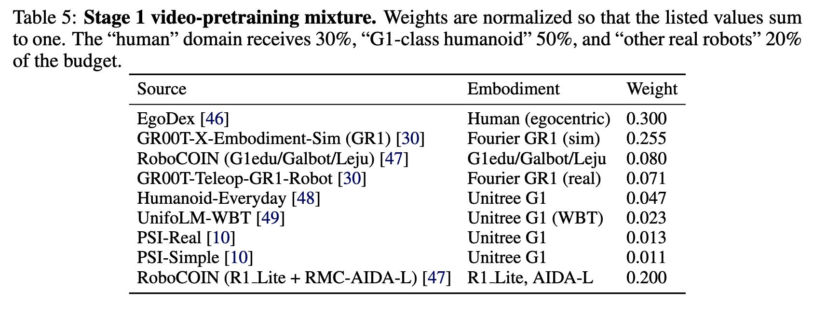
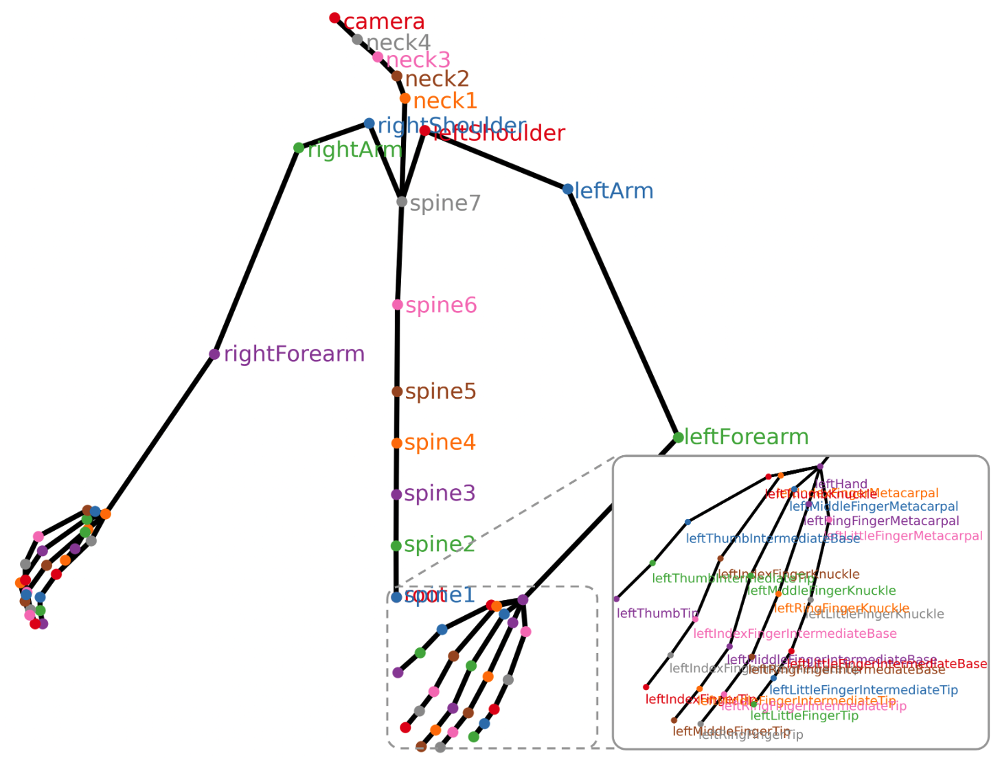
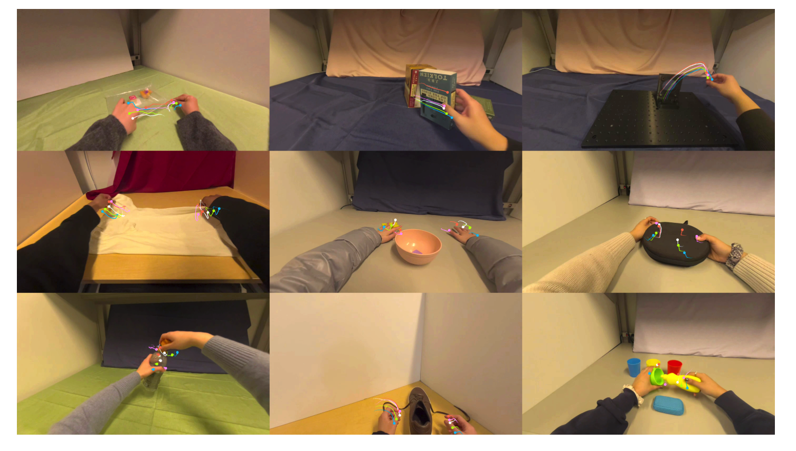
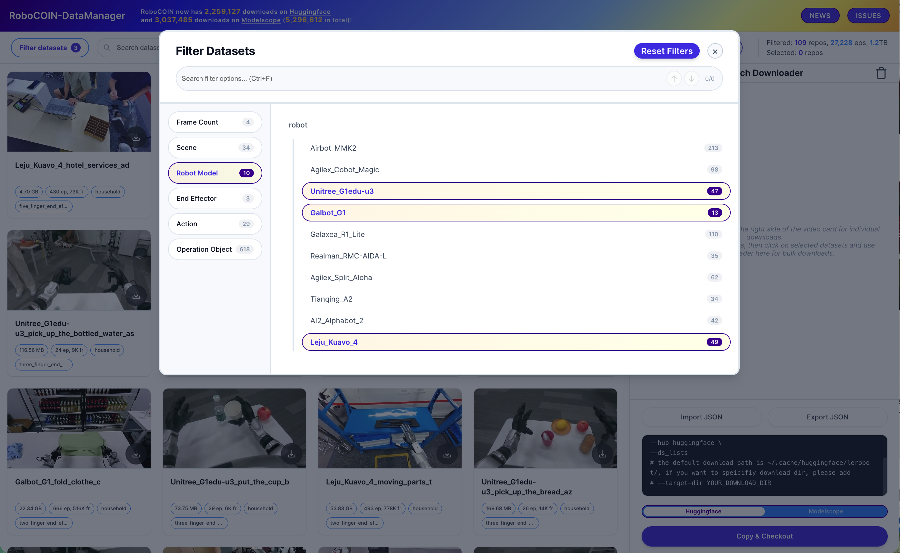
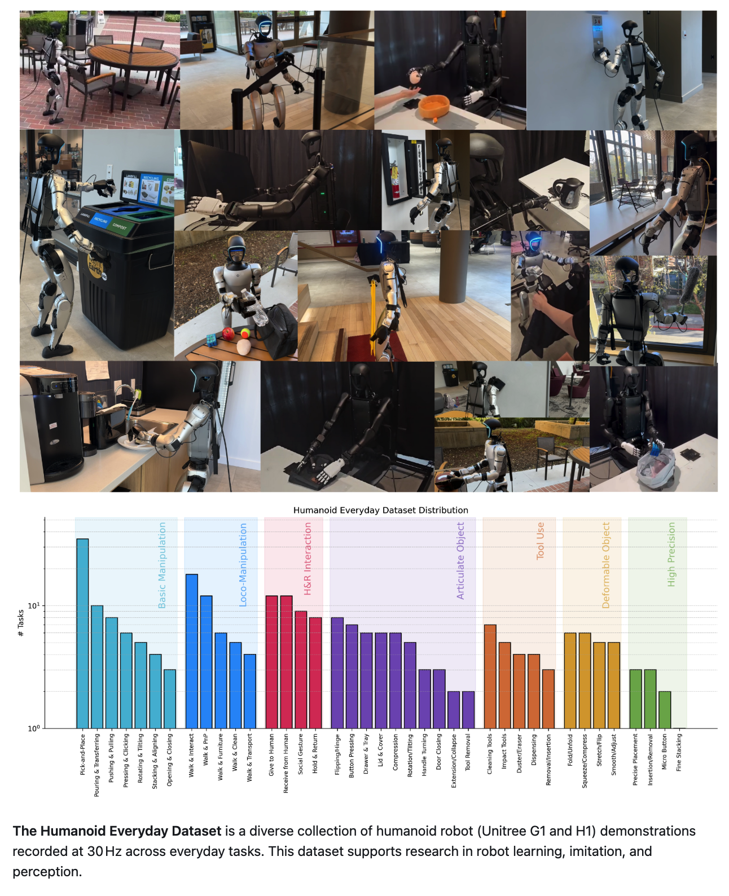
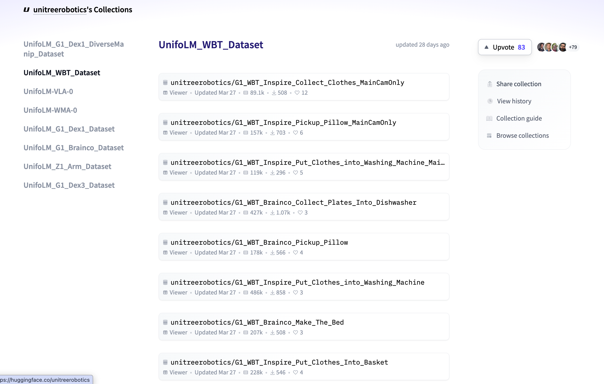
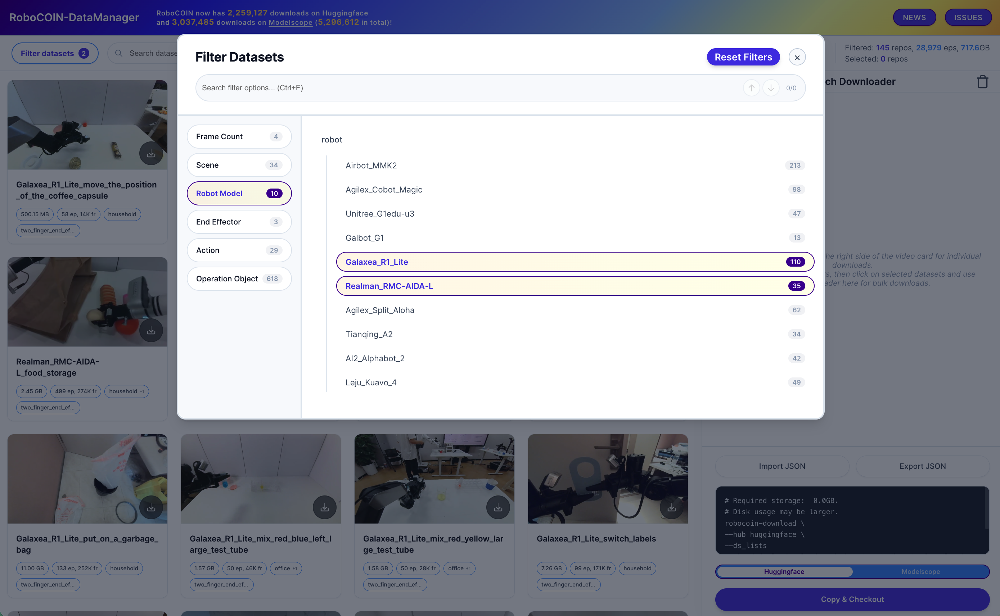

MotionWAM 使用 2,136 小时 egocentric 视频进行 Stage 1 视频预训练（动作标签忽略），旨在学习动作感知的视觉表征。数据集分三大类：Human 30%、G1 类人形机器人 50%、Other Real Robots 20%。

| 数据集 | Domain | 本体 | 权重 | Stage 使用 |
|---|---|---|---|---|
| EgoDex | Human | 人类双手（egocentric） | 30.0% | S1 |
| GR00T-X-Embodiment-Sim | G1-class | Fourier GR1（sim） | 25.5% | S1S2 |
| RoboCOIN (G1edu/Galbot/Leju) | G1-class | G1edu / Galbot / Leju | 8.0% | S1S2 |
| GR00T-Teleop-GR1 | G1-class | Fourier GR1（real） | 7.1% | S1S2 |
| Humanoid-Everyday | G1-class | Unitree G1 / H1 | 4.7% | S1S2 |
| UnifoLM-WBT | G1-class | Unitree G1（WBT） | 2.3% | S1S2 |
| PSI-Real | G1-class | Unitree G1（real） | 1.3% | S1S2 |
| PSI-Simple | G1-class | Unitree G1（sim） | 1.1% | S1S2 |
| RoboCOIN (R1 Lite + RMC-AIDA-L) | Other Real | R1 Lite / AIDA-L | 20.0% | S1S2 |
三类来源固定占比：Human 30%、G1 类人形 50%、其他真实机器人 20%。每类内部按 √episodes 进一步分配，防止单一数据集主导。Stage 1 训练时，所有带动作标注的来源只读取视频流，动作标签完全忽略——这是"廉价预训练"的核心。
| 规模 | 829h，338K episode，90M 帧，194 tasks，500+ objects |
| 存储 | 约 2 TB |
| 采集设备 | Apple Vision Pro（头戴式，第一人称） |
| 分辨率/频率 | 1080p，30 FPS |
| 本体 | 人类双手（非机器人） |
| 任务类型 | 日常灵巧操作（厨房/工具/家务），全为 in-the-wild |
| 骨骼标注 | 完整上半身运动链 3D 位姿（30 Hz）：camera（6-DoF）+ neck×4 + spine×7 + shoulders×2 + arms×2 + forearms×2 + 每手 25 关节（共 68 关节） |
| 置信度 | 每关节逐帧 ARKit 遮挡置信值（0–1） |
| 语言标注 | GPT-4 清洗后的任务描述 |
| 格式 | MP4（1080p 30fps）+ HDF5（骨骼 SE(3) 位姿 N×4×4） |
| 开源 | github.com/apple/ml-egodex |

上图：EgoDex 完整上半身骨骼结构（ARKit 标注）。注意 spine1–7 / neck1–4 全部有 3D 位姿，不只是手部。

上图：EgoDex 灵巧操作行为示例。任务包括拉 Ziploc 袋、从书架取书、拧螺丝、折叠 T 恤、整理杂物、打开箱子、拧瓶盖、系鞋带、清洗杯子。
只有 Stage 1 使用 EgoDex，Stage 2/3 完全不用。Stage 2 需要机器人关节命令作为监督（29-DoF G1 动作），EgoDex 只有人类上半身骨骼，无法直接 retarget，因此被排除在外。
Stage 1 的 Video DiT 做的事是：给定当前帧 + 语言，预测下一帧（flow-matching）。从 EgoDex 实际读取的内容：
| 数据 | 来源 | 用途 |
|---|---|---|
| ✅ 视频帧 zt | .mp4 | 当前帧 condition |
| ✅ 下一帧（加噪）zt+1 | .mp4 | 待去噪目标 |
| ✅ 语言描述 l | f.attrs['llm_description'] | 语言 condition |
| ❌ 骨骼 transforms/（68 关节 SE(3)） | HDF5 | 完全不读 |
| ❌ 置信度 confidences/ | HDF5 | 完全不读 |
| ❌ 相机内参 camera/intrinsic | HDF5 | 完全不读 |
语言标注虽然存在 HDF5 属性里，但读取成本极低（不需要加载骨骼数组）。HDF5 文件中真正昂贵的部分（N×4×4 的关节变换矩阵）在 Stage 1 训练时从未被打开。
| 采集方式 | Isaac Lab 仿真 + DexMimicGen 自动扩增 |
| 动作标注 | 仿真 GT 动作（joint positions + EEF poses） |
| 语言标注 | 自动生成任务描述 |
| 格式 | LeRobot 兼容，HDF5 |
| 开源 | HuggingFace |
| 子集 | 本体 | 轨迹数 | 任务数 | MotionWAM 使用？ |
|---|---|---|---|---|
| Humanoid robot tabletop manipulation | Fourier GR1（gr1_arms_waist） | 240k | 24 | ✅ 主力 |
| Humanoid robot tabletop - downsampled | Fourier GR1（gr1_unified） | 24k | 24 | ❌ 240k 的 10% 子集，调试用 |
| Cross-embodied bimanual manipulation | Panda 双臂 + GR1 变体 | 9k | 9 | 未知 |
| Robot Arm Kitchen Manipulation | Panda 单臂 | 72k | 24 | ❌ 非人形 |
| Unitree G1 Loco-Manipulation | Unitree G1 | 102 | 1 | 未知 |
HuggingFace 上总计约 321k 唯一轨迹（240k+9k+72k+102，下采样版不算）。MotionWAM 重点用的是 Humanoid 240k（24 个 pick-and-place 任务，每任务 10k 条）。Fourier GR-1 是傅利叶智能（Fourier Intelligence）的机器人，非 NVIDIA 自有硬件；NVIDIA 是数据集/模型发布方。
| Stage | 用途 |
|---|---|
| Stage 1 | 读视频帧，忽略动作标签，Video DiT 学习 GR1 机器人视角的视觉动力学先验 |
| Stage 2 | 240k 轨迹是最大体量的有标签数据源，驱动 Motion DiT trunk 学习跨任务机器人手臂运动表示 |
全部是桌面 pick-place，无 locomotion，任务多样性有限。GR1 本体（傅利叶智能）≠ Unitree G1，动作空间需 per-embodiment projector 对齐。sim-to-real gap 由 Stage 3 少量真实遥操作数据弥补。
| 规模 | 180K+ 轨迹，421 tasks，16 scenarios（全数据集） |
| 本体 | 15 种本体（双臂 / 半人形 / 全人形）：G1edu, Galbot, Leju RMC, R1 Lite, RMC-AIDA-L 等 |
| 采集方式 | 遥操作（CoRobot 采集流水线，基于 LeRobot） |
| 任务标注层级 | 轨迹级 / 片段级 / 帧级三层标注（Capability Pyramid） |
| G1edu/Galbot/Leju 子集大小 | 约 1.2 TB |
| 格式 | LeRobot 格式（Parquet + video MP4），统一动作空间 |
RoboCOIN 在 Table 5 里被拆成两个条目，分属不同 domain：
• G1edu/Galbot/Leju → G1-class humanoid（本页）权重 0.080
• R1 Lite + RMC-AIDA-L → Other real robots（§04）权重 0.200

G1edu/Galbot/Leju 筛选结果（约 1.2 TB）
| 规模 | 88h 真实遥操作（GR00T N1 论文 §2.2 确认） |
| 神经增强后 | 827h（由视频生成模型 10× 扩充） |
| 本体 | Fourier GR-1 真实人形机器人 |
| 采集设备 | VIVE Ultimate Tracker（手腕）+ Xsens Metagloves（手指） |
| 频率 | 20Hz 控制，RGB + 本体感知 |
| 标注层级 | 细粒度（grasping/moving/placing）+ 粗粒度任务级 |
| 格式 | HDF5，joint positions + EEF poses |
| Stage | 用途 |
|---|---|
| Stage 1（7.1%） | 视频帧训练 Video DiT |
| Stage 2 | 真实动作锚点——VIVE tracker + Metagloves 采集的精密动作，让 Motion DiT 学到高精度 Fourier GR1 本体的真实动作分布 |
作为 data pyramid 顶层，88h 原始数据通过视频生成模型扩充 10× 得到 827h 神经轨迹。质量最高：精密 MoCap 设备 + IK retargeting。规模相对小但人工成本高，场景集中于桌面操作。
| 规模 | ~500 GB，250 tasks，100,000+ time-steps |
| 本体 | Unitree G1（29-DoF, Dex3-1 手）+ H1（27-DoF, INSPIRE 手） |
| 采集设备 | Apple Vision Pro（手腕/手指 keypoints）+ IK |
| 频率 | 30 Hz |
| 感知模态 | 9 种：RGB / 深度 / LiDAR / 触觉 / IMU / 关节状态 / 人类动作 / EEF |
| 任务类别 | 260 diverse scenarios（loco-manipulation, basic manipulation, tool use, deformables, articulated objects, HRI） |
| 开源 | HuggingFace · 网站 |

| Stage | 用途 |
|---|---|
| Stage 1（4.7%） | 视频帧训练 Video DiT |
| Stage 2 | 最接近 MotionWAM 目标本体（Unitree G1），直接提供 29-DoF G1 动作分布；9 种模态中 Stage 2 只用 RGB + 关节状态 |
模态最丰富（9 种传感器同步）；含 Loco-Manip；G1（29-DoF）和 H1（27-DoF）两种配置；提供标准化在线评测平台。
| 规模 | 约 170 GB，14 个 HuggingFace 库 |
| 本体 | Unitree G1（whole-body） |
| 采集方式 | 全身遥操作（WBT = Whole-Body Teleoperation） |
| 频率 | 50 Hz（高频控制，MotionWAM Stage 3 标准） |
| 动作空间 | 29-DoF，SMPL-24 骨骼对齐 |
| 格式 | LeRobot 格式，与 MotionWAM Stage 2/3 直接兼容 |
| 开源 | HuggingFace Collection |

| Stage | 用途 |
|---|---|
| Stage 1（2.3%） | 全身运动视频正是 Stage 1 需要的"机器人第一人称全身运动视觉先验" |
| Stage 2 | 格式兼容——LeRobot + 50Hz + 29-DoF 与 MotionWAM Stage 3 标准完全一致，无需格式转换；是 Stage 2 中极少数包含 locomotion 的数据 |
官方 LeRobot 格式，50Hz，29-DoF，与 MotionWAM 完全匹配。全身运动（行走+操作）覆盖 Stage 2 中唯一强调 locomotion 的开源数据集。
MotionWAM ref [10] 指向 Ψ₀（Psi-Zero）论文，来自 USC Physical Superintelligence Lab。PSI-Real 和 PSI-Simple 是两个不同子集：
| MotionWAM 条目 | 对应来源 | 文件夹 | 论文 |
|---|---|---|---|
| PSI-Real | Ψ₀ 论文自采真实遥操作数据 | real/ |
psi-lab.ai/Psi0 · arXiv:2603.12263 |
| PSI-Simple | SIMPLE 仿真评测数据集 | simple/ simple-teleop/ simple-eval/ |
SIMPLE GitHub · arXiv:2606.08278 |
两者都托管在同一 HuggingFace 仓库：USC-PSI-Lab/psi-data（422 GB）
| 论文 | Ψ₀: An Open Foundation Model Towards Universal Humanoid Loco-Manipulation · RSS 2026 |
| 本体 | Unitree G1（全身） |
| Ψ₀ 使用的数据 | EgoDex（829h，预训练）+ Humanoid Everyday（31h，post-training）+ 自采遥操作数据（fine-tune） |
| 三阶段训练 | ① VLM backbone 在 EgoDex 预训练 → ② action expert 在 Humanoid Everyday post-train → ③ 少量任务数据微调 |
| 成绩 | 仅 800h 人类视频 + 30h 机器人数据，胜过用 10× 以上数据的 baseline 超 40% |
| 论文 | SIMPLE: Simulation-Based Policy Learning and Evaluation for Humanoid Loco-manipulation · arXiv:2606.08278 |
| 内容 | 50 个室内场景、随机 episode 条件的大规模人形 loco-manipulation 仿真 benchmark |
| 子文件夹 | simple/（仿真轨迹）、simple-teleop/（遥操作变体）、simple-eval/（评测子集） |
| 代码 | github.com/physical-superintelligence-lab/SIMPLE |
PSI-Real（1.3%）+ PSI-Simple（1.1%）权重最小，是 Stage 1/2 的辅助来源。注意 Ψ₀ 本身用的 EgoDex 和 Humanoid Everyday 在 MotionWAM Table 5 里已单独列出——PSI-Real/Simple 是 Ψ₀ 的自采数据，不与上面两个重复。
| Stage | 用途 |
|---|---|
| Stage 1（合计 2.4%） | 视频帧训练 Video DiT，补充 Unitree G1 本体的视觉先验 |
| Stage 2 | 提供 G1 动作标签，与其他 G1-class 数据共享 per-embodiment projector |
MotionWAM Table 5 中明确标注的唯一来源：RoboCOIN (R1 Lite + RMC-AIDA-L)，权重 0.200。这个 domain 里没有其他数据集（Open X-Embodiment / DROID / Bridge-v2 均不在 MotionWAM 的使用范围内）。
| 本体 | Unitree R1 Lite + RMC-AIDA-L（非人形机械臂配置） |
| 子集大小 | 约 700 GB |
| 格式 | LeRobot 格式（Parquet + video MP4） |
| Table 5 条目 | 本体子集 | Domain | 权重 |
|---|---|---|---|
| RoboCOIN (G1edu/Galbot/Leju) | 人形机器人子集 | G1-class humanoid | 0.080 |
| RoboCOIN (R1 Lite + RMC-AIDA-L) | 非人形机械臂子集 | Other real robots | 0.200 |
R1 Lite 和 RMC-AIDA-L 形态上更接近桌面操作臂而非全身人形机器人。把它们单独归入"other real robots" domain，是为了在 Stage 1 视频预训练时引入更多样的视觉动力学先验，同时在 Stage 2 中通过 per-embodiment projector 接入不同动作空间。

HDF5（Hierarchical Data Format v5）是一种层级化二进制数据格式，类似于"文件系统嵌在一个文件里"——可以在单个 .hdf5 文件内存储多维数组（如 N×4×4 变换矩阵）、元数据（语言标注）和分组（按关节名分"文件夹"）。特点：随机访问快、支持压缩、PyTorch/NumPy 原生支持（h5py 库）。
EgoDex 每条 episode 由一个 .mp4 + 一个 .hdf5 组成，帧级对齐（N = 30 × T 秒）：
# 语言标注在 HDF5 属性里
f.attrs['llm_description'] # 任务描述
f.attrs['llm_description2'] # 可逆任务的反向描述
f.attrs['which_llm_description'] # 1 或 2，指示当前 episode 用哪条所有 transforms 均在 ARKit origin frame 下表达（录制开始时设定的地面固定坐标系）。同一 session 内帧间一致，但跨 episode 不保证一致（设备重新初始化时原点会漂移）。
每时刻动作 = 2 只手 × (腕部 3D 位置 + 腕部 6D 朝向 + 5 指尖 3D 位置) = 48 维。注意：EgoDex 自己的 benchmark 只用这 48 维，而完整 HDF5 里有 68 个关节的完整 SE(3) 位姿——MotionWAM 两者都不用。